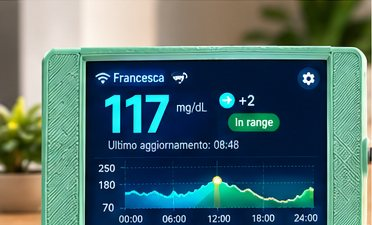
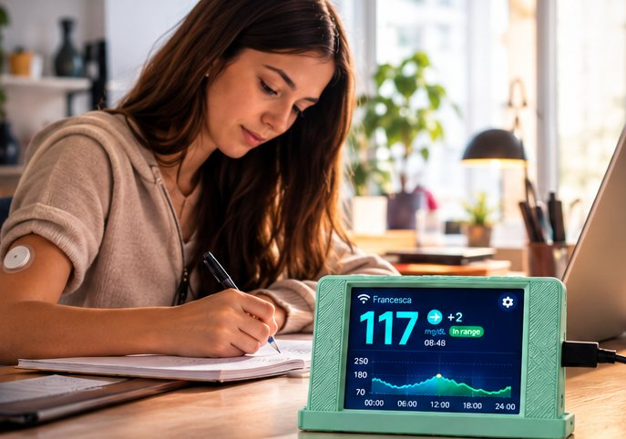
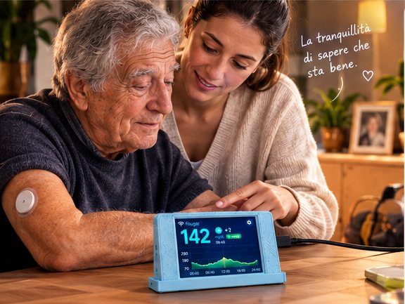
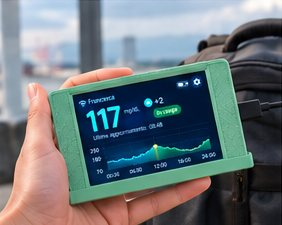
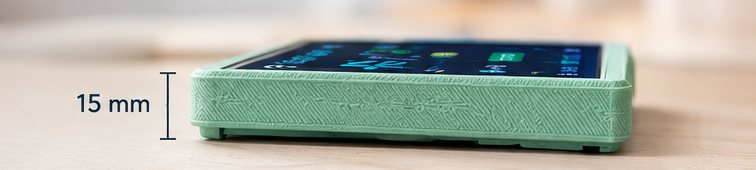
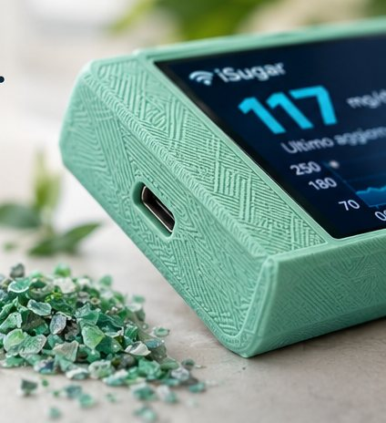
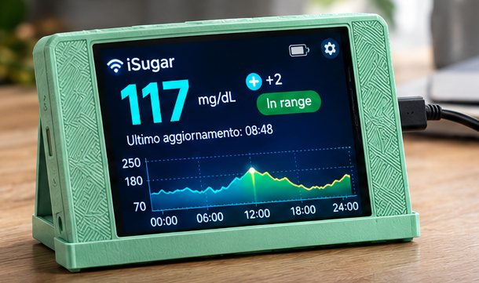
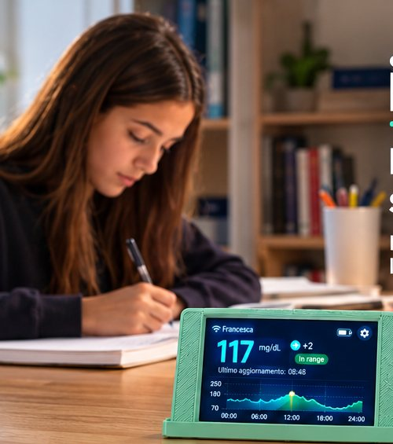
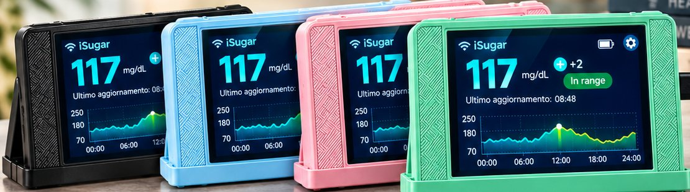
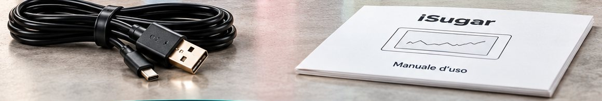

Display chiaro e intuitivo
Valore attuale in grande, freccia di tendenza, stato "in range" e grafico delle ultime 24 ore. Leggibile anche da lontano.
iSugar mostra in tempo reale i dati del sensore FreeStyle Libre* su un piccolo display sempre acceso. Un'occhiata e sai come va, senza aprire ogni volta l'app. Per te e per le persone che ami.


Pensato per chi convive con il diabete e per chi se ne prende cura. Il valore resta lì, chiaro e leggibile, senza dover prendere in mano il telefono.

Valore attuale in grande, freccia di tendenza, stato "in range" e grafico delle ultime 24 ore. Leggibile anche da lontano.

10 × 5,5 × 1,5 cm per 90 g. Lo sposti dove ti serve.

Sta in borsa o nello zaino, a casa come in viaggio.

La scocca è stampata in 3D in Italia con materiale riciclato.

Si alimenta con il cavo incluso: PC, alimentatore da parete o power bank.
Alimenta iSugar con il cavo USB e scansiona il QR code che compare sullo schermo.
Nickname, rete Wi‑Fi di casa e le credenziali dell'account collegato al sensore.
iSugar si collega e mostra il valore in tempo reale. Nient'altro da fare.

Scegli quello che si abbina alla tua casa o al tuo stile.

| Lettura dati | Sensore FreeStyle Libre* in tempo reale |
| Display | Touch a colori con valore, tendenza e grafico |
| Dimensioni | 10 × 5,5 × 1,5 cm |
| Peso | 90 g |
| Connessione | Wi‑Fi 2,4 GHz |
| Alimentazione | Cavo USB 5V (nessuna batteria interna) |
| Lingue | Italiano, English, Français, Español, Deutsch e altre |
| Scocca | Stampata in 3D, plastica riciclata |
| Privacy | Dati e credenziali salvati solo sul dispositivo |
| Aggiornamenti | Software aggiornabile quando vengono rilasciate nuove versioni |

Presto disponibile anche sul nostro negozio Etsy.
iSugar legge i dati dal tuo account collegato al sensore FreeStyle Libre*. Ti serve un account attivo e l'app ufficiale funzionante sul telefono. Se hai dubbi sul tuo modello, scrivici prima di acquistare.
No. iSugar si collega da solo alla rete Wi‑Fi di casa. Il telefono serve solo durante la configurazione iniziale.
No, va tenuto collegato via USB. Per portarlo fuori casa puoi usare una power bank.
Nickname, rete Wi‑Fi e credenziali restano salvati solo sulla memoria del dispositivo. Non abbiamo server nostri e non riceviamo i tuoi dati.
No, iSugar non ha allarmi. Per gli avvisi continua a usare l'app ufficiale.
Sì, con un ripristino dalle impostazioni del dispositivo e una nuova configurazione. Trovi i passaggi nella guida.
Per supporto o problemi di configurazione scrivici, rispondiamo il prima possibile.